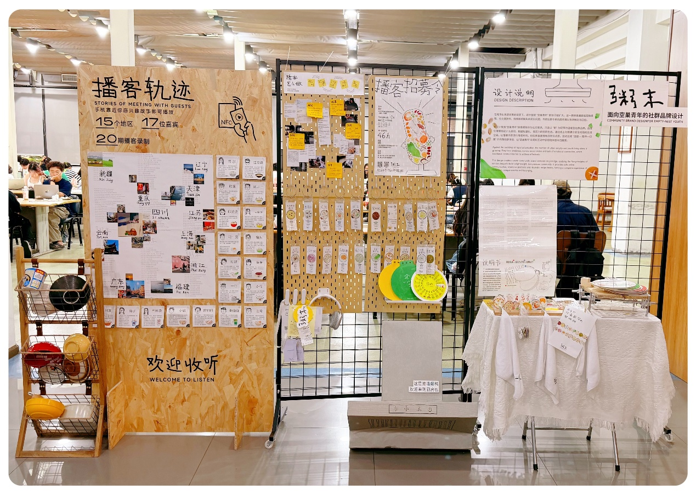

学院通知 · 教学通知
探寻艺术与阅读的“可持续”密码 ：川大艺术学院2026届优秀毕业作品暨主题书展启幕
发布时间：2026-06-23 10:33:06
近日，四川大学工学图书馆一楼悄然多了一处特别的“厨房” ——抽油烟机、随意摆放的碗，仿佛刚刚还有人在这里忙碌。这 是 艺术学院的优秀毕业作品《粥末》 ， 聚焦“空巢青年”的情感陪伴与社交需求，邀请了来自 15 个地区的 17 位嘉宾参与声音采集，打造以“粥”为纽带的温暖型社群品牌。 这是“艺·阅：可持续的未来”四川大学艺术学院 2026 届优秀毕业作品暨主题书展的现场，展览由四川大学图书馆与艺术学院联合主办，精选了艺术学院 2026 届毕业生多组优秀作品。他们用艺术的语言，回应着这个时代的情感结构——在流动与离散中寻找归属，在快节奏中打捞缓慢，在个体独处时依然保持与世界对话的勇气。 与常规毕业展不同，这些艺术作品被放置在图书之间。每一件作品，都有一组与之呼应的图书，按“时空镜像”“情绪引力”“在地记忆”“生活诗学”“边界漫游”五个主题展开， 作品的立意在书页间得到延伸。同学们或观看展品，或翻 阅图书，在心理学和社会学著作中寻找关于人际关系的表达，探寻数字时代关于身份认同的答案……当艺术走进图书馆，这些年轻的声音与经典文字相互映照，共同构成了一所大学精神生活的生动底色。 作为校园文化建设的核心场所，图书馆不仅承担着文献资源收藏的基本职能，更在以文化人、以美育人的实践中持续拓展自身边界。“艺·阅”展览连续举办三年，正是四川大学图书馆在美育入馆路径上的一次深耕——主动对接学院优秀创作成果，以文献资源为根基，以艺术展陈为媒介，让书香与画意交融，使图书馆空间真正成为知识获取与审美熏陶可以同时发生的 场所。 文字：杨靖 图片：黄峻杰 马梦灵
